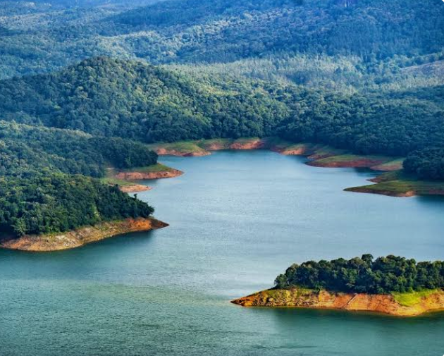
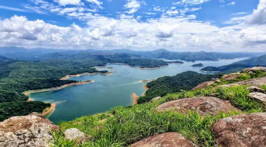
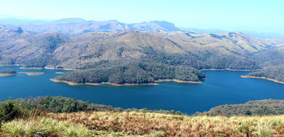
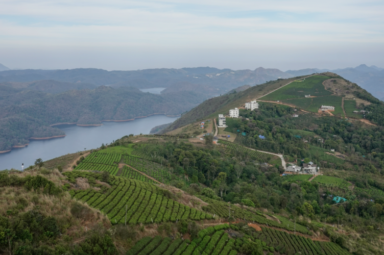
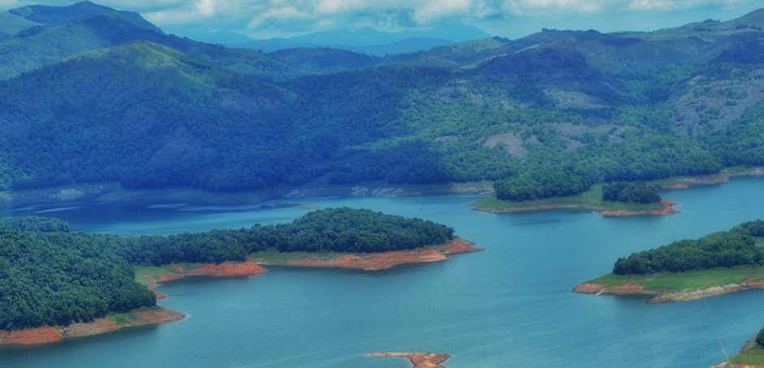

Calvary Mount is a famous hilltop viewpoint located near Idukki Dam in Idukki district, Kerala. It is well known for its breathtaking panoramic views of the Idukki Reservoir, surrounding mountains, forests, and green valleys. The peaceful atmosphere and cool climate make it one of the most beautiful viewpoints in the district.
Visitors can enjoy a short walk to the viewpoint while admiring the natural beauty of the Western Ghats. The area is perfect for photography, sightseeing, bird watching, and relaxing with family and friends. During sunrise and sunset, the scenery becomes even more spectacular, making Calvary Mount a must-visit destination for nature lovers and tourists visiting Idukki.





Calvary Mount is one of the most beautiful hill viewpoints in Idukki District, Kerala. Located near Ayyappancoil, it offers breathtaking panoramic views of the Idukki Reservoir, Kuravan and Kurathi Hills, forests and valleys. The place is also an important Christian pilgrimage centre and attracts thousands of tourists and devotees every year. 1
Calvary Mount became well known after the construction of the Idukki Dam. It developed as both a scenic tourist destination and a Christian pilgrimage centre. During the Lenten season, many devotees visit the hill to participate in the Way of the Cross. 2
The hill offers spectacular views of the Idukki Reservoir, Kuravan-Kurathi Hills and the Idukki Arch Dam. Visitors can enjoy trekking, photography, bird watching, sunrise and sunset views, and peaceful nature walks.
The area is rich in evergreen forests, grasslands, medicinal plants and native trees. Visitors may also see elephants, colourful birds, butterflies and other wildlife in the surrounding forests.
Today, Calvary Mount is one of Idukki's most visited viewpoints. It is famous for its panoramic views, trekking trails, Christian pilgrimage and the spectacular view of the Idukki Reservoir and surrounding hills. 3